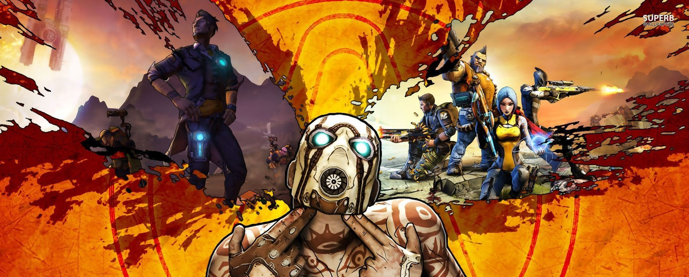

Borderlands
Una saga para recordar
Borderlands es una saga de videojuegos shooter en primera persona y género rol de acción desarrollados en un entorno de western espacial y ciencia fantástica. Es desarrollada principalmente por Gearbox Software para diversas plataformas. Ha recibido elogios de la crítica y éxito comercial por su jugabilidad cooperativa multijugador y su sentido del humor.
El primer juego de la saga fue lanzado el 20 de agosto de 2009 para MAC OS, Microsoft Windows y las consolas Xbox 360 y PlayStation 3. Originalmente diseñado como un juego serio en su concepto, la entrega final resultó en un juego mucho más alternativo con un estilo visual en Cell Shading que termino siendo una franquicia en si mismo.
Jugabilidad
¿Como vas a matarlos a todos?
Borderlands presenta un modo de cuatro jugadores cooperativo en línea, además de un modo de un solo jugador, y dos jugadores de pantalla dividida co-op para las consolas. Gran parte de la jugabilidad consiste en elementos tradicionales de shooter de primera persona, combinando una selección de armas para usar y una selección de enemigos para luchar.
A su vez, incluye elementos para la creación de personajes como los encontrados en videojuegos de rol (RPG's), pero la propia Gearbox lo describe como un First Person Role Playing Shooter (FPRPS)
Entre los elementos de rol se destaca el sistema de experiencia, el cual consiste en la acumulacion de puntos a medida que el jugador realiza acciones como conocer lugares nuevos, completar misiones y matar enemigos. A medida que acumula puntos el jugador sube de nivel ganando puntos de habilidad que podra gastar en alguna de las tres ramas de hablididades del personaje.
El juego usa un Procedural Content Creation System (Sistema de Creación de Contenido Procedural) para generar dichas armas y objetos, que pueden variar sus habilidades, poder de disparo, cadencia de fuego y precisión, añadir efectos elementales tales como fuego, electricidad, corrosión o explosiones, y en raras ocasiones también otro tipo de bonificaciones especiales como por ejemplo la regeneración de munición. Un código de colores es usado para indicar la rareza del arma. Se estima que el sistema de generación aleatorio pueda crear 17 millones de variaciones posibles
Otro punto que remite a los juegos de rol es que una buena parte del tiempo del jugador, sera gastado en misiones secundarias. Estas misiones seran dadas por diversos personajes y cada uno tendra una recompensa unica. Las misiones varian notablemente en su naturaleza, desde simples rellenos a revelaciones acerca de la trama del juego.
Por otra parte, ademas de su modo co-op, el juego cuenta con un modo player vs player. En cualquier momento un jugador podra retar al otro a un duelo para poner a prueba su capacidad destructiva. Tambien cuanta con arenas especiales para los jugadores mas aficionados al player vs player donde podran enfrentarse a multiples jugadores en un solo lugar.
En todos los juegos de la saga, el jugador tiene la posibilidad de elegir entre multiples personajes, cada uno representa una clase jugable. Cada nueva entrega pone a disposicion nuevos personjes y en muchos casos el jugador se cruzara con sus antiguos personajes en las versiones mas recientes de los juegos, asi, Roland, uno de los personajes jugables principales de la primera entrega, estara muy presente en la segunda entrega no ya como personaje jugable sino como NPC importante en la trama de la historia.
Estos personajes tienen caracteristicas y habilidades muy particulares por lo que el jugador debe elegir el que mejor se adapte a su estilo de juego.